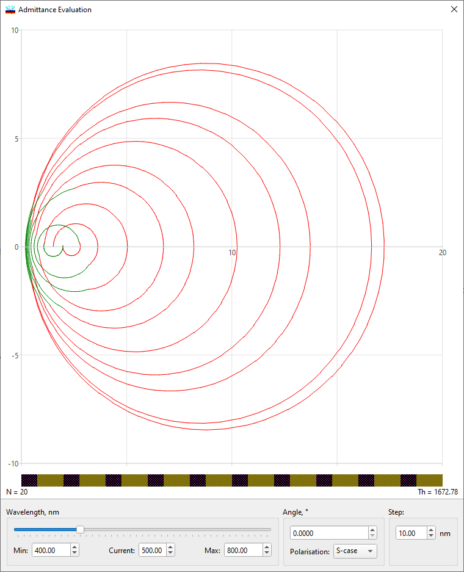
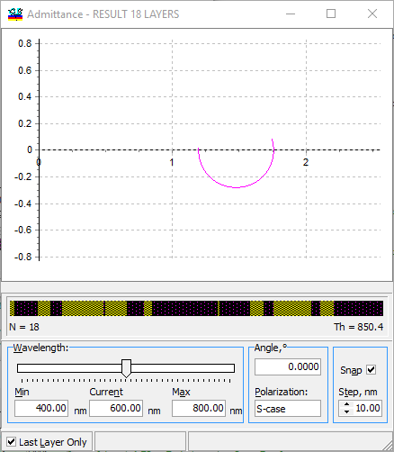

Admittance Evaluation
Admittance Evaluation
Navigation: OptiLayer Menu Commands > Analysis Menu >
Admittance Evaluation
` <idh_field_evaluation.html>`__ ` <idh_menu_analysis.html>`__ ` <idh_refractive_index_evaluatio.html>`__
The Admittance Evaluation is one of the OptiLayer Evaluation tools , accessible through the Admittance command from the Analysis menu. This window displays an Admittance diagram for the current design. The design is represented by a design bar showing layers in various colors, the number of layers N, and the overall physical thickness Th. The units for physical thickness can be set in the Configuration Menu.

You can select the wavelength value at which you want to see the admittance plot by moving the slider in the Wavelength window using the mouse cursor. The overall spectral range for the slider is displayed (and can be modified) in the Min and Max edit boxes; the current position of the slider is indicated by the wavelength value in the Current field. You can stop the slider at certain positions if you check the Snap box in the lower right corner of the window. The slider can stop only at positions defined by the minimum wavelength value and the increment specified in the Step edit box. Note that the increment is always set in nanometers and must be in the range from 1 to 100. You can also set the Angle of incidence and Polarization state (S, P, or Both) in the corresponding edit boxes. Angular and Spectral Modes can also be switched in the Admittance window via the right-click popup menu. In Angular mode, the Admittance window will allow you to study the angular dependence of the admittance diagram. The Last Layer Only mode allows you to estimate the influence of the top design layer on the performance of the design. This option can be useful for complicated designs consisting of several dozen layers.
